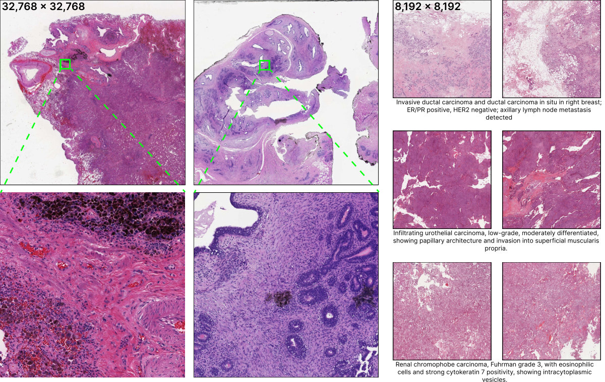
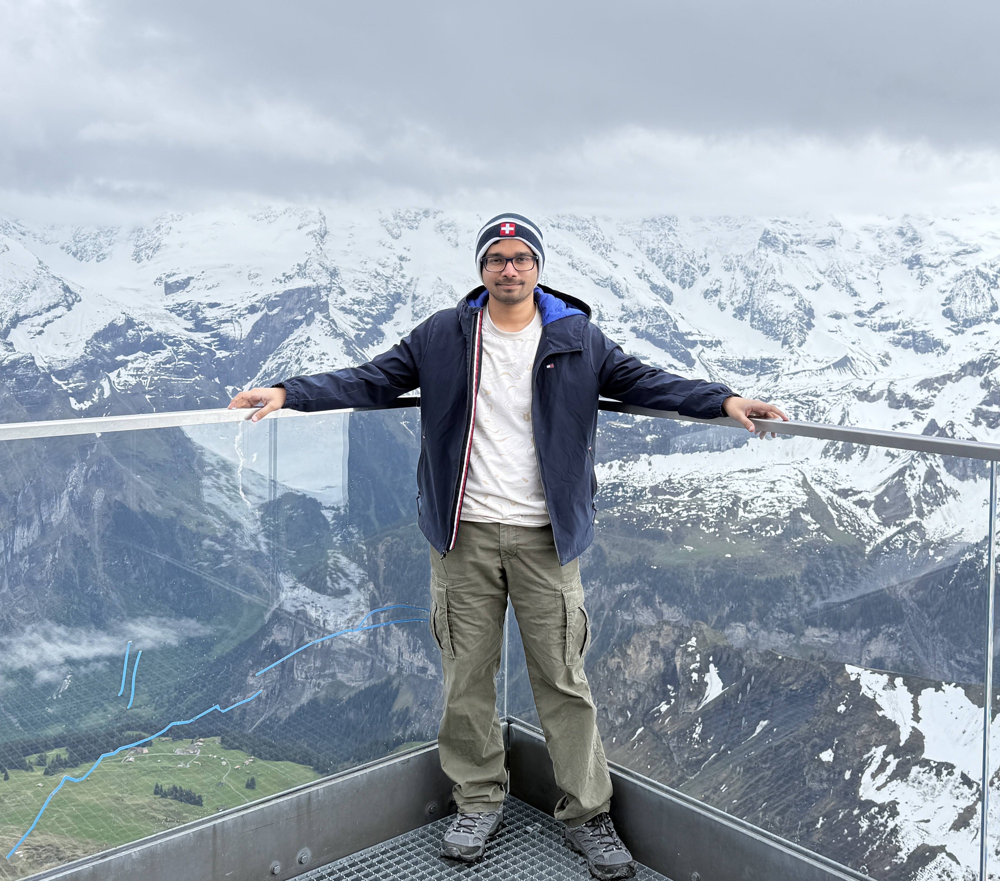
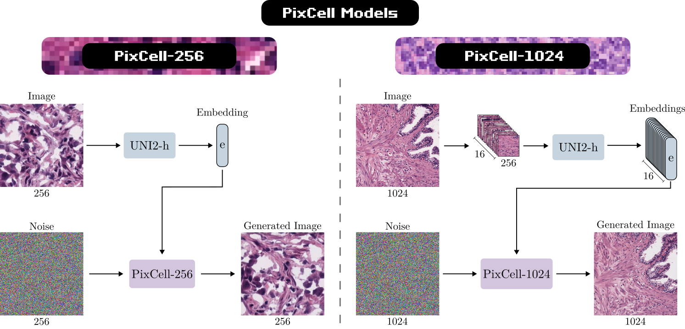
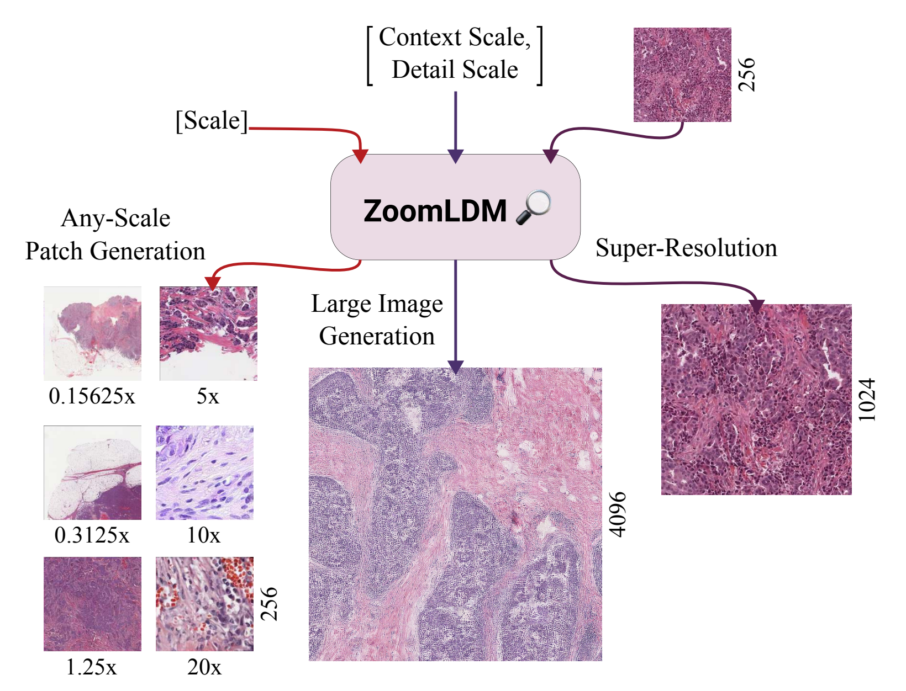
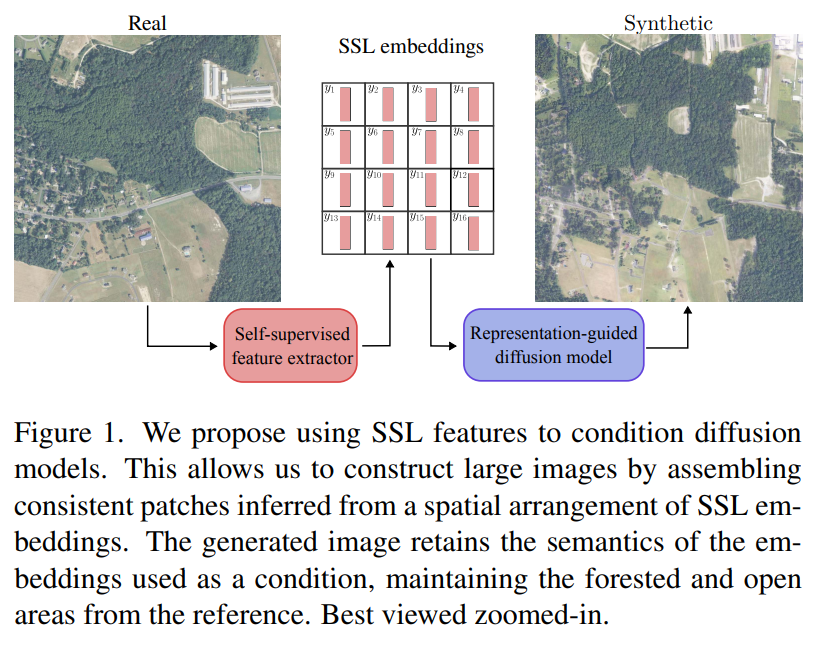
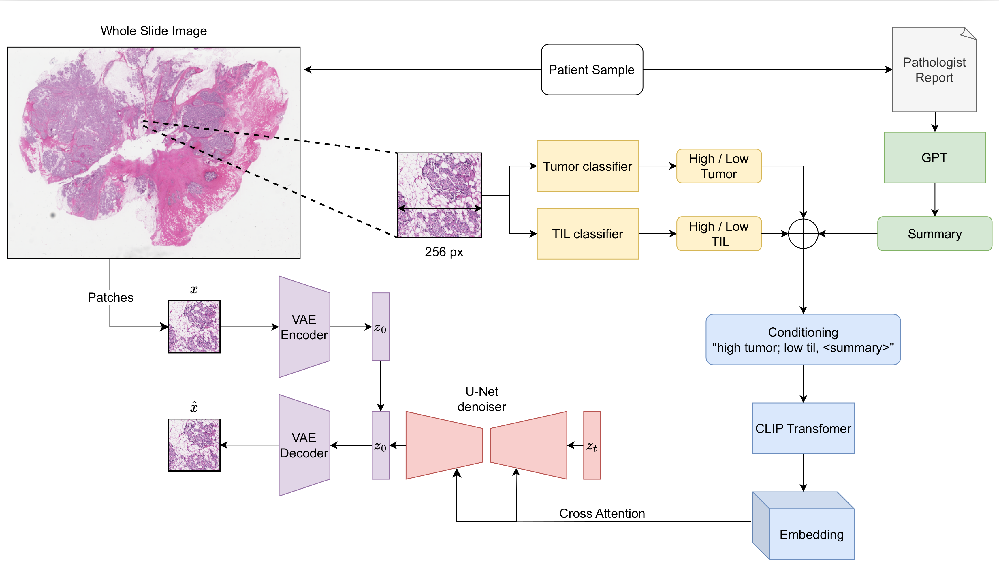
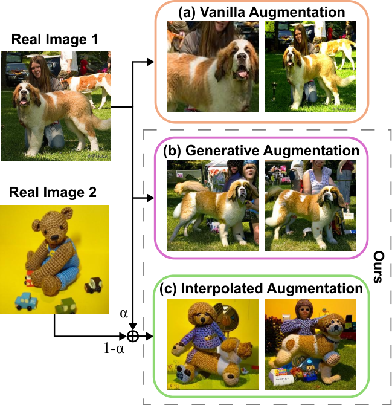
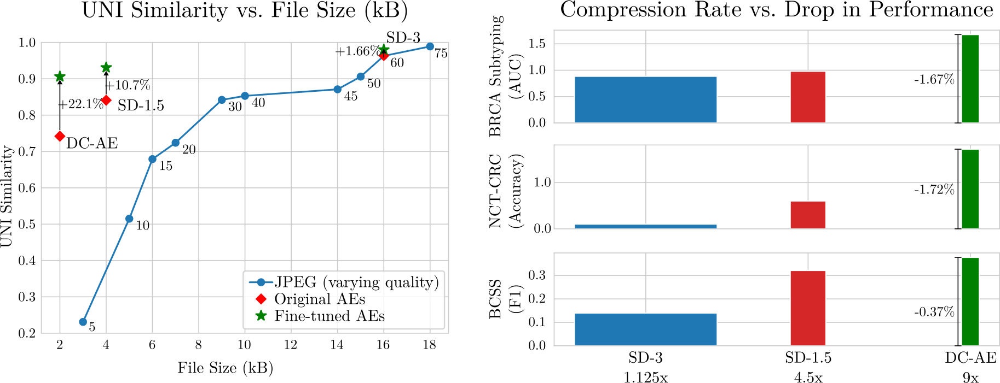
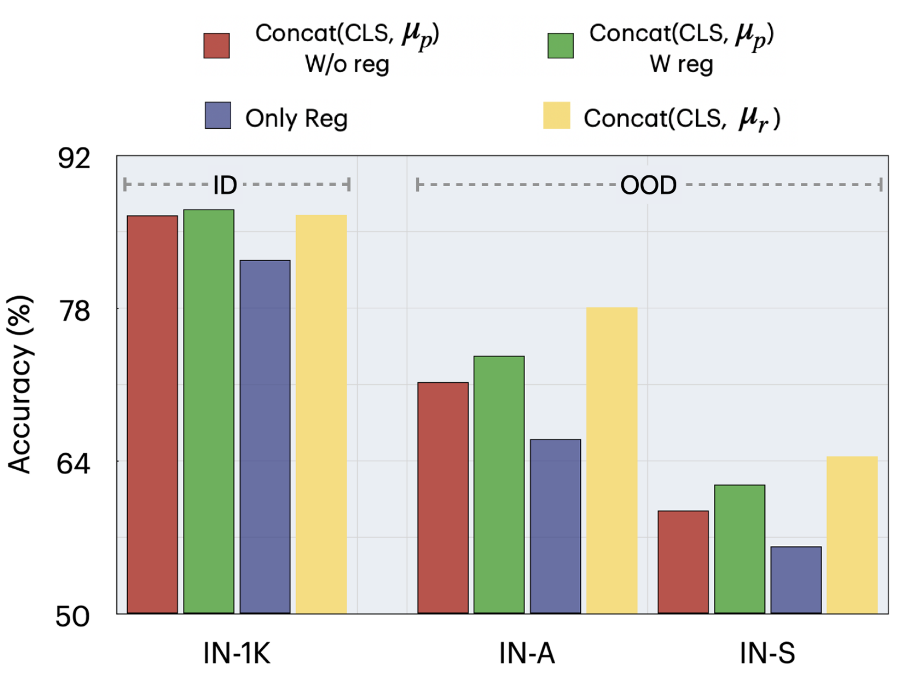

BigCell: Generating Gigapixel Whole-Slide Images
NeurIPS 2026
Generating gigapixel whole-slide images, up to 32,768 × 32,768 pixels.

PhD Student, Computer Science · Stony Brook University
I am a PhD student in the Computer Science department at Stony Brook University, advised by Dimitris Samaras. My research is focused on generative models for computer vision, particularly for generating gigapixel histopathology images. Before this, I was a Software Engineer at Bloomberg LP, where our team built an ETL pipeline for the ingestion of third-party data.
In 2020, I obtained my Master's in Computer Science from NYU, where I worked with Kyunghyun Cho's group on Similarity of Neural Networks, and interned at IBM Watson Health.
Previously, I obtained a B.Tech in Electrical Engineering from Indian Institute of Technology, Hyderabad, where I worked with Sumohana Channappayya on Image Processing. I interned at Video Analytics Lab, IISc Bangalore.
In my free time, I enjoy playing video games and reading fantasy novels. I'm a big fan of strategy games, such as Dota 2 and Age of Empires 2.

NeurIPS 2026
Generating gigapixel whole-slide images, up to 32,768 × 32,768 pixels.

Under review
First generative foundation model for histopathology, with open weights.

CVPR 2025
Multiscale diffusion model for histopathology and satellite imagery.

CVPR 2024
We condition latent diffusion models with SSL embeddings and generate large images in histopathology and satellite imagery.

WACV 2024
We build a text-conditioned LDM for histopathology using GPT-summarized text reports and CLIP embeddings.

CVPR Workshops (DataCV) 2026Best Paper Award
Diffusion-generated views of an image, conditioned on its own SSL embedding, improve self-supervised learning.


ICASSP 2025
Registers make ViTs robust.